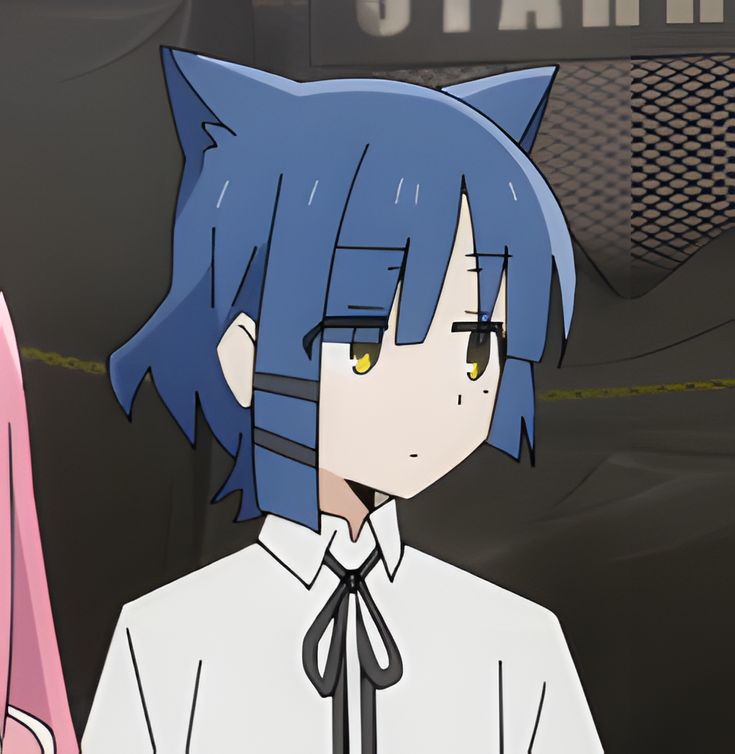

AICER M. CARDENASCarmensita Village, Talon Tres, Las Piñas City, 1717 CAREER OBJECTIVETo gain knowledge and experiences in the industry of my profession to enhance my skills and critical thinking that I been using in my academic field from the up of my present time as an active Software engineering and free lance photographer EDUCATION •Children Learning Center - Nursery/Kinder (2005 - 2008) VOLUNTEER EXPERIENCESDistinct STI Las Piñas - Photographer •Assisted a school year end campus event as a first year student in college - Creative Media Team of Tanghalan STI Las Piñas ("Bata! Sisikat Ka"). •Photographer of the school year starting campus event as a second year student in college - Creative Media Team of Tanghalan STI Las Piñas ("School Event") Color.ph - Editor
•Editor of some designs
Team Irregulars - Player/Coach•Player and became a captain of an small esport organization•Coach of an small esport organization and win an event from facebook PROJECTS•Varsity Player of Basketball at LPSAA in Elementary Program(2015 - 2017) |